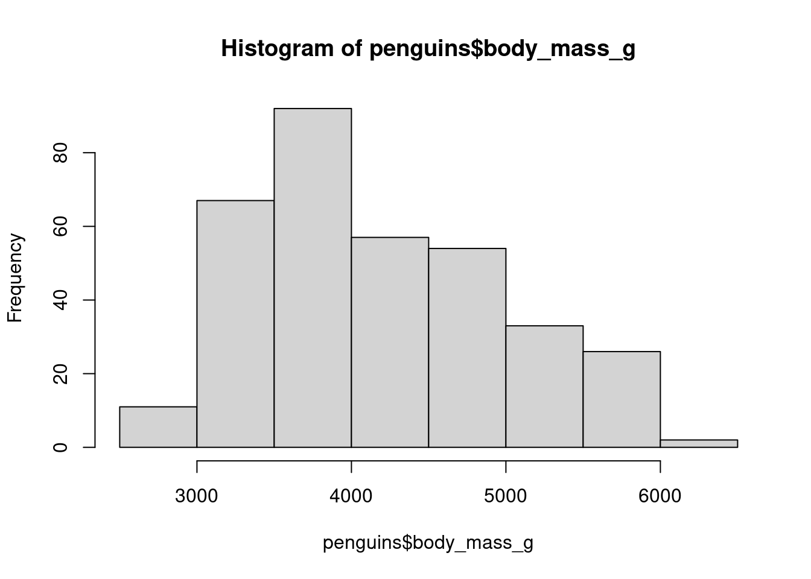
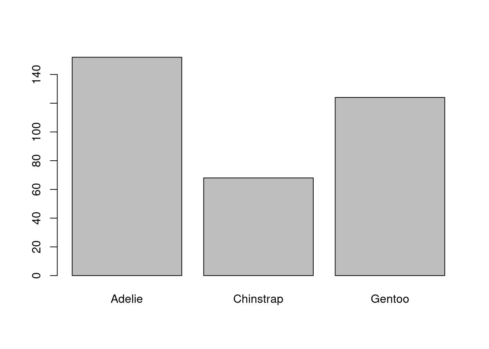
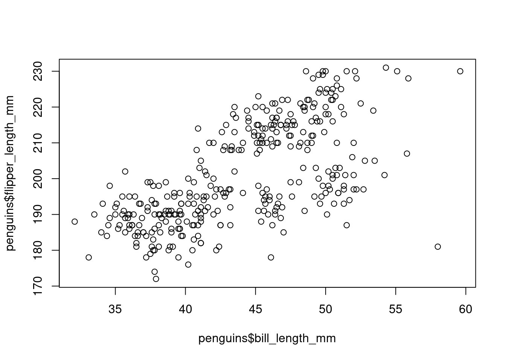

install.packages("palmerpenguins")14 Introduction to Plotting
14.1 Introduction
We will now learn some techniques to visualize your data. We will learn how to create histograms, bar charts, line plots, scatter plots, among others, and how to customize them.
Base R (R without any packages) has some basic plotting functions. These are easy to use but they are not easily customizable and don’t look very elegant. For that reason we will also learn how to use the popular plotting package ggplot2. But in this chapter we stick to base R, leaving ggplot for later chapters.
14.2 Example Setting: Penguins
To get started on some basic plotting techniques we will use the famous “Palmer Penguins” dataset. This dataset contains several measurements of different penguins collected by researchers on Antwerp Island in the Palmer Archipelago of Antarctica. Interestingly, there is a smaller island next to this called Brabant Island.
The dataset contains data from three species of penguins: the Adelie, Chinstrap and Gentoo. A picture of each species is shown in the pictures below:


This dataset is convenient to use because we can load it into R straight from a package. First install the package with the dataset with:
Then load it with:
library(palmerpenguins)
data(penguins)Running the command data(penguins) loads up two datasets: penguins and penguins_raw. We will ignore the penguins_raw dataset and only work with the penguins one.
14.3 Data Inspection
Before getting started with plotting, it’s good to first get a basic understanding of our data. Let’s get some summary statistics with summary() and find out how many observations with have with nrow():
summary(penguins) species island bill_length_mm bill_depth_mm
Adelie :152 Biscoe :168 Min. :32.10 Min. :13.10
Chinstrap: 68 Dream :124 1st Qu.:39.23 1st Qu.:15.60
Gentoo :124 Torgersen: 52 Median :44.45 Median :17.30
Mean :43.92 Mean :17.15
3rd Qu.:48.50 3rd Qu.:18.70
Max. :59.60 Max. :21.50
NA's :2 NA's :2
flipper_length_mm body_mass_g sex year
Min. :172.0 Min. :2700 female:165 Min. :2007
1st Qu.:190.0 1st Qu.:3550 male :168 1st Qu.:2007
Median :197.0 Median :4050 NA's : 11 Median :2008
Mean :200.9 Mean :4202 Mean :2008
3rd Qu.:213.0 3rd Qu.:4750 3rd Qu.:2009
Max. :231.0 Max. :6300 Max. :2009
NA's :2 NA's :2 nrow(penguins)[1] 344We see that we have data on 344 penguins with the following variables:
species: A factor variable indicating which of the 3 species the penguin is.island: A factor variable indicating which island the penguin was on.bill_length_mm: A numerical variable indicating how long the penguin’s bill (their beak) was (in mm).bill_depth_mm: A numerical variable indicating how deep the penguin’s bill was (in mm). The depth is the distance between the top and bottom of their beak.flipper_length_mm: A numerical variable indicating how long their flipper (wing) is (in mm).body_mass_g: A numerical variable indicating how heavy the penguin is (in grams).sex: A factor variable indicating the gender of the penguins (maleorfemale).year: A numerical variable indicating what year the data point is from.
We also see that we have 2 missing values for 4 of the variables and 11 missing values for sex. For our purposes here it is fine to just leave these missings in the dataset. We don’t need to delete those rows.
14.4 Basic Plotting with Base R
We will now learn how to do some very simple plots with base R: the histogram, the bar plot and the scatter plot. The plots from base R are not very beautiful, but the idea is to learn how to make “quick and dirty” plots for you to quickly get a sense of your data, before making nicer customizable plots with ggplot.
14.4.1 Histograms
To describe the distribution of a single numeric variable, we can use a histogram. A histogram splits the data into “bins” and shows the number of observations in each bin. We can create a histogram by using the hist() function, putting the variable we want to plot as the argument inside:
hist(penguins$body_mass_g)
14.4.2 Bar Plot
For categorical variables, we can use a bar plot to visualize the relative frequencies of different categories. We already saw the table() function which counts the number of times each category appears:
table(penguins$species)
Adelie Chinstrap Gentoo
152 68 124 If we want to plot these values, we can put this entire expression into the barplot() function:
barplot(table(penguins$species))
14.4.3 Scatter Plots
To quickly visualize the relationship between two variables we can make a scatter plot. We can do this by listing the two variables we want to plot as arguments in the plot() function:
plot(penguins$bill_length_mm, penguins$flipper_length_mm)
In each case, the base R commands to make plots are very short and easy to use. Therefore I use them very frequently in the console to learn what a dataset looks like. But because they do not look very nice I do not tend to use them in research papers. I prefer to use the plots from ggplot, which we will learn about next.